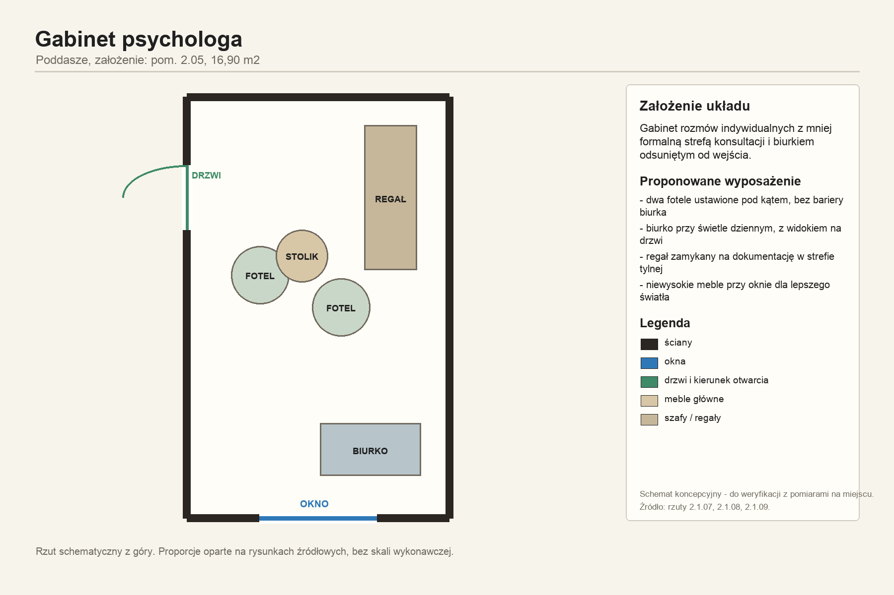

Wyposażenie meblowe i pozostałe
Meble, gabinety i zaplecze
Podział na pomieszczenia, rzut poglądowy, lista wyposażenia, ceny robocze oraz osobny kosztorys z rezerwą 20%.

Kozetka, parawan, szafa medyczna, biurko elektryczne i Epson A3.
Gabinet PsychologDwa fotele STRANDMON, biurko, szafy aktowe i urządzenie wielofunkcyjne.
Gabinet PedagogDwa fotele STRANDMON, stół konsultacyjny i zwiększony zapas szaf aktowych.
Zaplecze SocjalneStół dla 6-8 osób, 8 krzeseł, krzesło biurowe, kuchnia i lodówka.
Podział na pomieszczenia
Ceny są robocze, brutto i bez dostaw, montażu, wniesienia, konfiguracji drukarek oraz prac instalacyjnych. Szatnie przyjęto jako łącznie 24 skrytki: po 12 skrytek w każdej szatni.
Kosztorys mebli i wyposażenia pozostałego
Osobny kosztorys dla gabinetów, szatni, pomieszczenia socjalnego, magazynu sali gimnastycznej, gabinetu WF i strychu-magazynu.
| Pomieszczenie | Pozycji | Kwota bazowa | Rezerwa 20% | Razem |
|---|
Uwagi zakupowe
Przy zamówieniu trzeba potwierdzić dokładne wymiary pomieszczeń, światło drzwi, skosy poddasza, dostęp do gniazd i sieci dla urządzeń Epson oraz wymagania dotyczące przechowywania dokumentacji.
Dla szaf aktowych i medycznych rekomendowane są modele metalowe zamykane. Dla krzeseł przy biurkach przyjęto standard ergonomiczny z podparciem lędźwiowym i zagłówkiem.